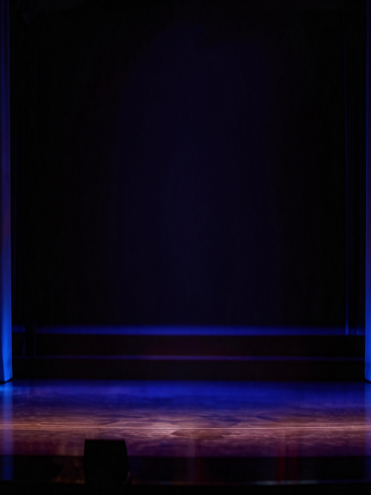

乐舞胡旋
THE SANCAI HOLOGRAPHIC TIME MIRROR

📷 实时投影
盛唐·典藏吉祥定格
一舞千年，余韵绕梁
MUSEUM COMMEMORATIVE BLESSING

📸 本地摄像头访问受阻 (Camera Locked)
浏览器安全策略限制了摄像头权限。若您使用远程开发机，安全策略要求您使用安全域名或本地回环地址访问。
（请确保在本地实体电脑的 Chrome 浏览器中打开，并允许摄像头授权）

摄像头关闭
🔍 调试日志 (Debug Logs)